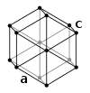

hydrogen

Definition: Hydrogen is the chemical element with the symbol H and atomic number 1. Hydrogen is the lightest element. At standard conditions hydrogen is a gas of diatomic molecules having the formula H2. It is colorless, odorless, tasteless, non-toxic, and highly combustible. Hydrogen is the most abundant chemical substance in the universe, constituting roughly 75% of all normal matter. Stars such as the Sun are mainly composed of hydrogen in the plasma state. Most of the hydrogen on Earth exists in molecular forms such as water and organic compounds. For the most common isotope of hydrogen (symbol 1H) each atom has one proton, one electron, and no neutrons.
Source: Wikipedia
Wikipedia Page
Wikidata Page
Occurs in: